We have two data sets. The first contains seasonally adjusted and non seasonally adjusted monthly retail trade for food and services, sourced from the U.S. Census Bureau’s monthly trade survey. The second data set contains monthly Canadian natural gas production by volume. Both have and index of the class yearmonth.
We sum the monthly values because that is what quarterly volume is asking. If we wanted average monthly gasoline production by quarter then we would average the months. It does still appear to be seasonal.
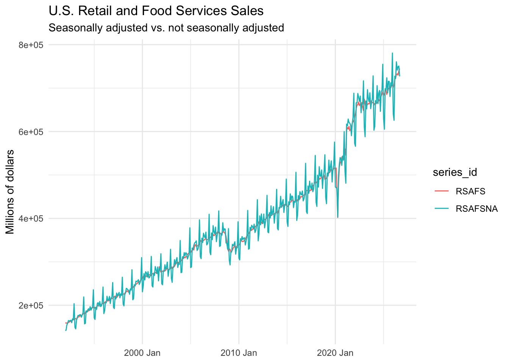
The two series follow the same tend. The NSA series has peaks and valleys at the same time every year. The seasonaly adjusted series does not have this pattern. Instead, it appears to stay near the mean of the NSA series for a given seasonal period.
`geom_smooth()` using method = 'loess' and formula = 'y ~ x'
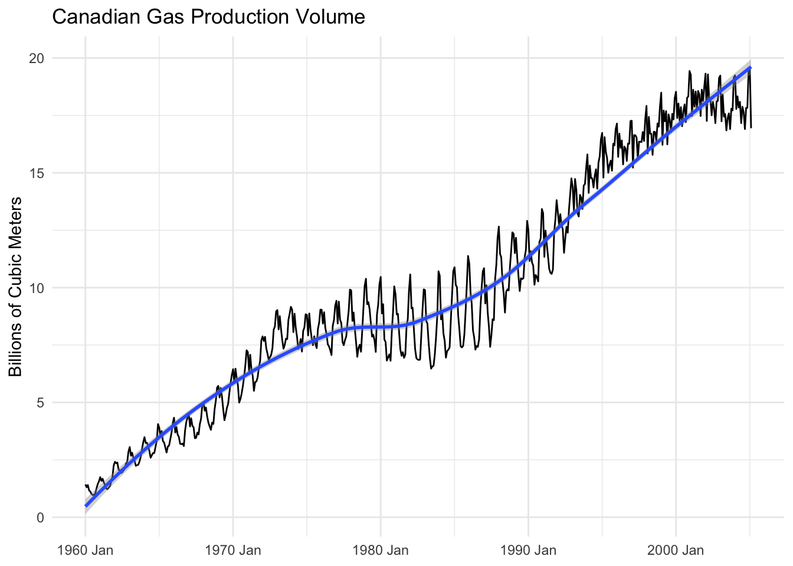
I added a trend line to the autopilot in order to get a clearer view of that trend through the seasonality of the data.
Transformations
It seems like Canadian Gas production had wider swings in the period of the 80s-90s. In general, the swings do appear to increase over time though, ignoring the 80s-90s period. I am not inclined to deny taking the log of Canadian gas.
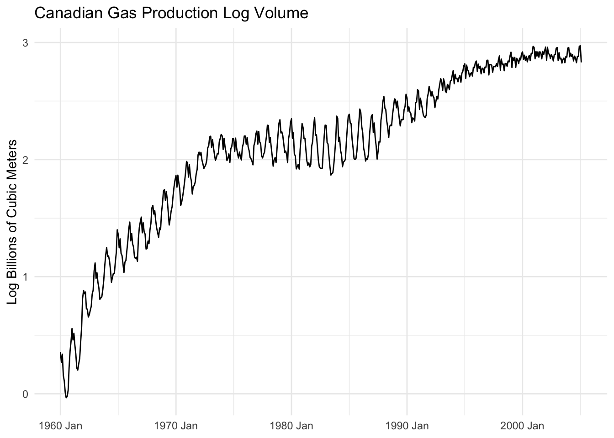
I don’t think the log transformation is appropriate here. The increases in the seasonal swings are not consistently tracking well enough with the increase in level to warrant the transformation. The main reason you would take logs of a variable is to deal with swings that are getting larger as the level of the series gets larger, and its not solving that problem for this series.
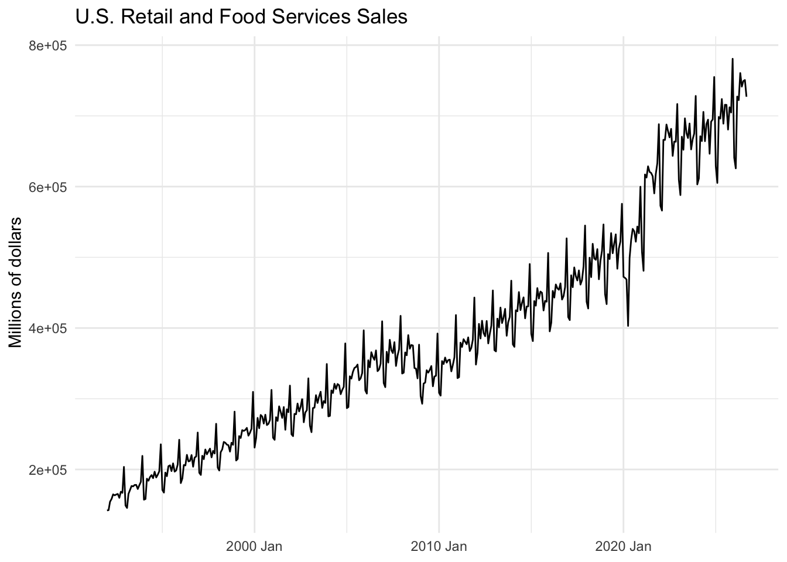
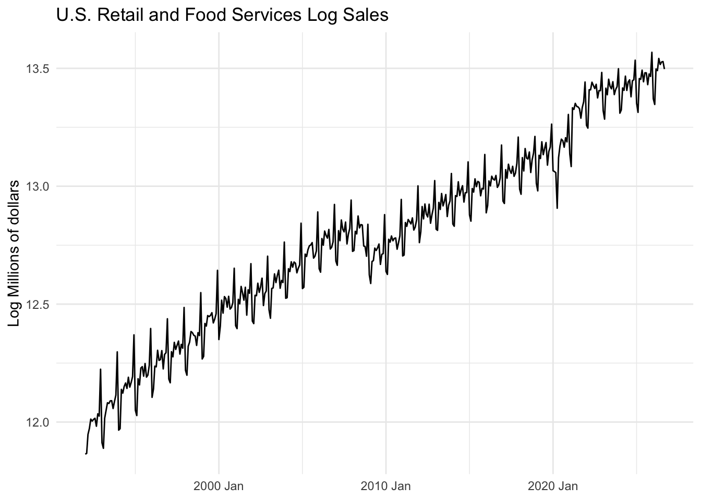
The retail sales data is better suited to a log transformation, the seasonal swings are increasing in size over time as the level increases.
Warning: Removed 1 row containing missing values or values outside the scale range
(`geom_line()`).
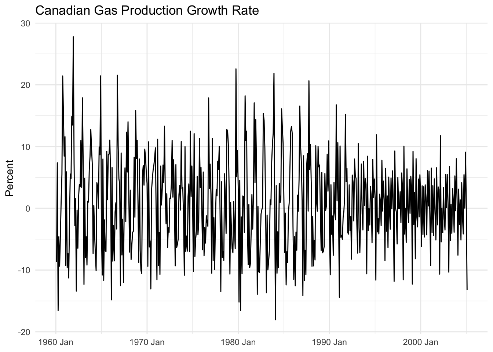
Warning: Removed 1 row containing missing values or values outside the scale range
(`geom_line()`).
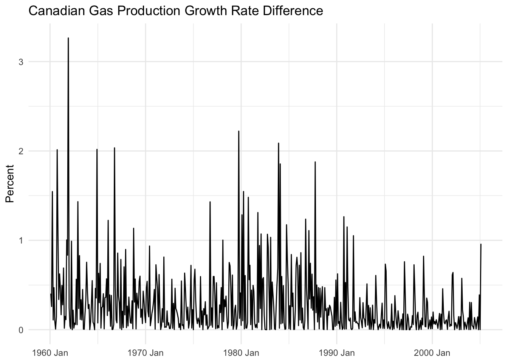
The log difference is not good enough of an approximation for growth rate. We observe frequent differences that can go as high as 3%.
Warning: Removed 2 rows containing missing values or values outside the scale range
(`geom_line()`).
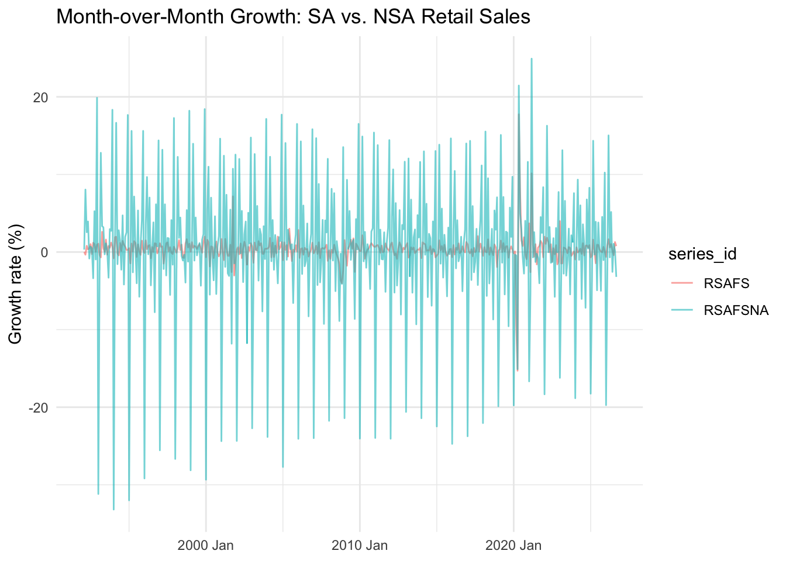
The NSA series is significantly more volatile than the SA series. The SA series is much smoother. The volatility in growth rate for the NSA data comes from the seasonal peaks and valleys in the original series.
Seasonality
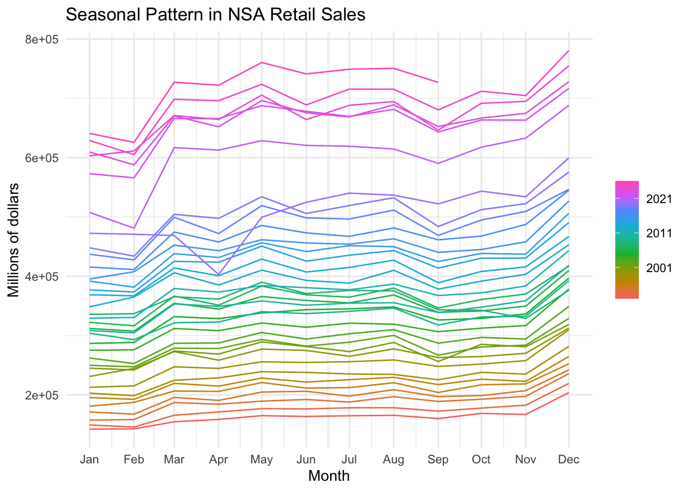
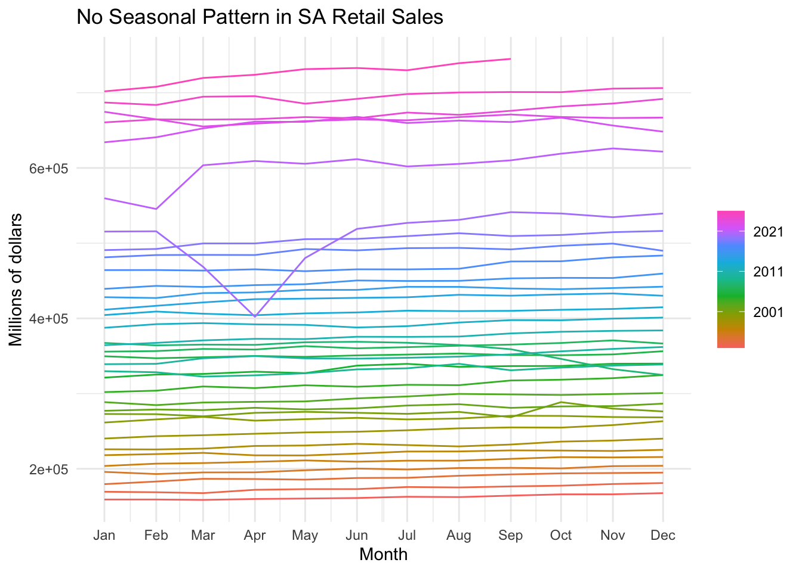
In the NSA series, excluding 2020, we see a consistent repeated pattern that occurs every year. The SA series does not have this pattern, it is much more stable and smooth, almost flat, often with small growth year over year, measured by removing the seasonal effect of each month.
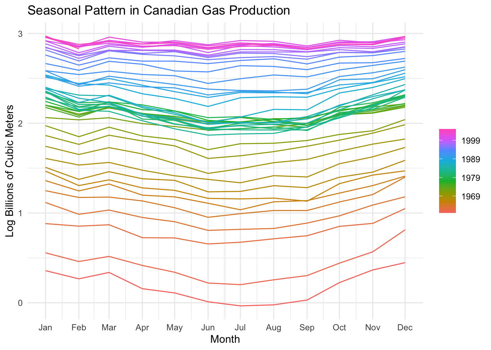
The winter months seem to regularly be the peak of Canadian gas production, while the summer months are the lowest. This is likely due to natural gas combustion creating energy to power Canada’s heaters all winter.
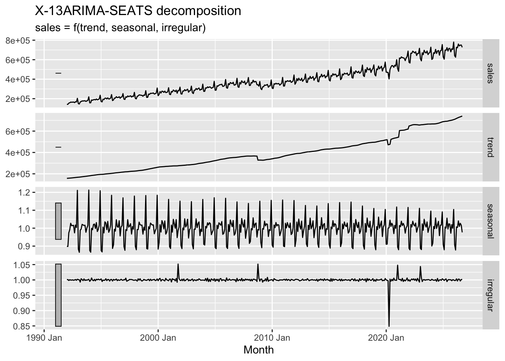
For the retail sales data, December has the strongest seasonal effect at 1.2. Meaning sales are about 20% higher than trend in that month. The size of seasonal swings appears to be shrinking over time.
In general the match between our version of X13ARIMA and the Census Bureau’s version is quite close. The difference is usually less than 1%. The largest difference occurs in 2020 thanks to the pandemic.
term
estimate
std.error
statistic
p.value
(Intercept)
1.150
0.041
27.761
0.000
trend()
0.004
0.000
57.692
0.000
season()year2
-0.112
0.052
-2.144
0.032
season()year3
-0.052
0.053
-0.996
0.320
season()year4
-0.133
0.053
-2.537
0.011
season()year5
-0.174
0.053
-3.305
0.001
season()year6
-0.251
0.053
-4.777
0.000
season()year7
-0.230
0.053
-4.374
0.000
season()year8
-0.219
0.053
-4.170
0.000
season()year9
-0.227
0.053
-4.325
0.000
season()year10
-0.125
0.053
-2.383
0.018
season()year11
-0.078
0.053
-1.480
0.140
season()year12
0.007
0.053
0.137
0.891
The approximate average monthly growth rate is 0.4%. June has the most significant seasonal effect.
The model does a good job at capturing the trend and seasonality between 1990 and around 2020. Pre 1990 the model’s trend level is highly inaccurate.
These residuals are not white noise. The Ljung-Box test shows a p-value of ~0.000, meaning that the residuals are not independent and that theres likely structure to model further.
Forecast Evaluation
Warning: The future dataset is incomplete, incomplete out-of-sample data will be treated as missing.
1 observation is missing at 2005 Mar
# A tibble: 2 × 4
.model .type MAE RMSE
<chr> <chr> <dbl> <dbl>
1 snaive Test 0.562 0.702
2 tslm Test 4.01 4.36
SNAIVE: MAE = 0.562, RMSE = 0.702.
TSLM: MAE =4.01, RMSE = 4.36
The SNAIVE model has a lower MAE and RMSE than the TSLM model. The SNAIVE model is clearly the better model here, both metrics agree. The first forecast is for January of 1980. The last is March 2005.
Diebold-Mariano Test
data: errs$snaiveerrs$tslm
DM = -31.278, Forecast horizon = 1, Loss function power = 1, p-value <
2.2e-16
alternative hypothesis: two.sided
The DM statistic is -31.278 with a p-value of ~0.00. I reject the null that the models have equal forecast accuracy.
Warning: The future dataset is incomplete, incomplete out-of-sample data will be treated as missing.
1 observation is missing at 2005 Mar
# A tibble: 2 × 4
.model .type MAE RMSE
<chr> <chr> <dbl> <dbl>
1 snaive Test 0.562 0.702
2 tslm Test 2.09 2.42
SNAIVE: MAE = 0.562, RMSE = 0.702
TSLM: MAE = 2.09, RMSE = 2.42
The accuracy of TSLM has improved significantly with the sliding window method. This is because old data is being dropped from the model, where residuals were not independent and the model was highly inaccurate.
Reflection
From the analysis of the residuals from the simple trend with seasonal dummies model revealed real structure in the residuals in the period from 1960 to 1980. I am assuming there was something in the world happening at that time, that compared to the rest of the data was unusual. Whatever the case, its clear that the model is overestimating then underestimating natural gas production in that period. If the model was working during that period residuals would be firmly centered on 0 with low variance. This gets improved with the sliding training sample, I would be interested in seeing how an even shorter period improves accuracy of the model.